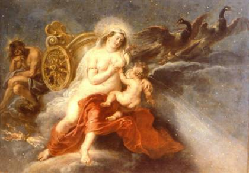

|
 |
 |
 |
 |
 |
 |
 |
|
|||||||


Peter Paul Rubens-1577-1640
La “Profe Alicia” como la llamaban los niños, llevó a la clase de Ciencias el cuadro del pintor Peter Paul Rubens de la Vía Láctea. La madre amamantando su hijo, y les explicó que la Tierra formaba parte del sistema solar, que se llamaba Galaxia, o el camino de la leche.
Al salir de la clase de ciencias Lucía, Luis y Carlos, recogieron sus loncheras para su hora de recreo. Los tres se reunieron bajo la sombra del árbol de mango.
-Luis dijo; me encantó la clase de la “Profe Alicia”, lo que dijo que el mundo tiene caminos de leche para todos, por eso me hizo reír y casi me saca de clase, yo me imaginaba calles, y carreteras inundadas de leche.
-¿Te imaginas las calles de asfalto del color de la leche? Muy divertido, la gente de rodillas, tomándose toda la leche que pudiera o recogiéndola en canecas y teteros.
Dijo Lucía.
-¿Oigan que tal un aeropuerto con pistas de leche y aviones aterrizando en ollas?
Respondió Carlos, y las risas llamaron la atención de los demás amiguitos.
-Pero los asfaltadores como mi papá, tendrían que tener una súper nevera para que la leche fuera fría como paletas, para chupar gratis las que uno quisiera. Dijo Luis.
-¿Tu ya mudaste tus dientes de leche? Porque a mi me faltan mis muelitas, mi mamá dice que están bien demoradas. ¿Oye, cómo se cortarían las paletas del asfalto lechoso? Dijo Lucía.
-¡Se me ocurre con un cuchillo de la cocina! Dijo Carlos.
El patio de recreo se llenó de las carcajadas de los 3 niños, los tres disfrutaban e intercambiaban sus deliciosas loncheras.
-Escuchen tengo una idea, todos somos rojos y blancos, cuando nacemos todos toman leche y la sangre que tenemos es roja, así algunos sean negritos como Luis. ¿O de que color es tu sangre Luis? Preguntó Lucía.
-Pues roja como la tuya, y como la del chibcha Carlos, en mi casa todos negritos, pero todos rojitos de sangre y mamá me dijo que me crié con su leche, como mis hermanos. Tienes razón Lucía, somos rojos y blancos todos, por eso es fácil entendernos. Dijo Luis.
-¿Entendernos? ¿Fácil? Que va, los niños talvez, pero los grandes, son distintos
como dice mi mamá, hay unos que se creen de sangre azul. Dijo Lucía.
Sonó la campana y se terminó el recreo y al volver a clase, Luis preguntó:
-Profe, ¿hay gente de sangre azul?
-No, es una manera de decir, que hay gente que se cree superior a otros, pero todas las razas, tienen la sangre roja.- Dijo la Profesora.
-Entonces los señores griegos, han debido llamar no la Vía de leche, sino la Vía sangre roja. Dijo Carlos.
-No Carlos, es que se ve como si fuera una nube de goticas de leche, por eso le pusieron ese Nombre, pero hay muchas otras Galaxias, son miles. Dijo la profesora.
-Profe y será que en esas otras hay también gente que vive como nosotros y los alimentan con pura leche de las mamás?- Preguntó Lucía.
-No lo sé Lucía, nadie ha podido comprobar si en las otras Galaxias hay gente viva, quedan tan lejos, que hasta ahora nadie lo sabe.
-¿Y será que los Astrónomos tampoco lo saben? Dijo Luis.
-No ellos tampoco, el Poder de Dios es muy grande nadie lo puede entender, bueno mis amores, espero que todos hayan entendido que la Tierra es la Cuna de todos los seres humanos, por eso los Indígenas Americanos, la llaman la Madre Tierra y nacen hombres, mujeres y niños, de todas las razas criados con leche.
Al terminar la clase, los niños se fueron a soñar con la Vía Láctea!